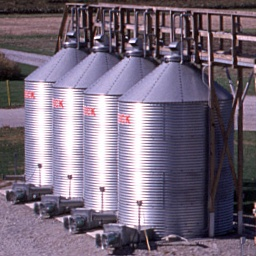

|
bins | ||
| teem |
 |
- pos2idx,idx2pos - unu - qbert - overrgb - ilk - ungantry - mrender - vprobe - gkms - miter |
pos2idx
idx2posConverting between index and "world" space, given the distinction between node-centered and cell-centered samples. Very boring, very fundamental. unu Utah Nrrd Utilities qbert Measures values, gradients, and second directional derivatives in a scalar volume, in order to generate a dataset that can be used by the Simian volume renderer. overrgb Takes an RGBA nrrd and composites over a given background color, with gamma correction, to produce an 8-bit RGB image. ilk Geometric transformations on images with filtered sampling. ungantry For CT scans acquired with an angled image plane, this removes the "gantry tilt" by shearing the data back to a rectilinear grid. mrender Volume rendering without shading or transfer functions. More interesting than you might think. vprobe Produce a volume of measurements from a volume of data. Can produce a volume of gradient magnitudes, or gradient vectors, from a scalar volume input. gkms The algorithms implemented for my Master's Thesis on the semi-automatic generation of transfer functions. miter Volume rendering with shading and transfer functions.